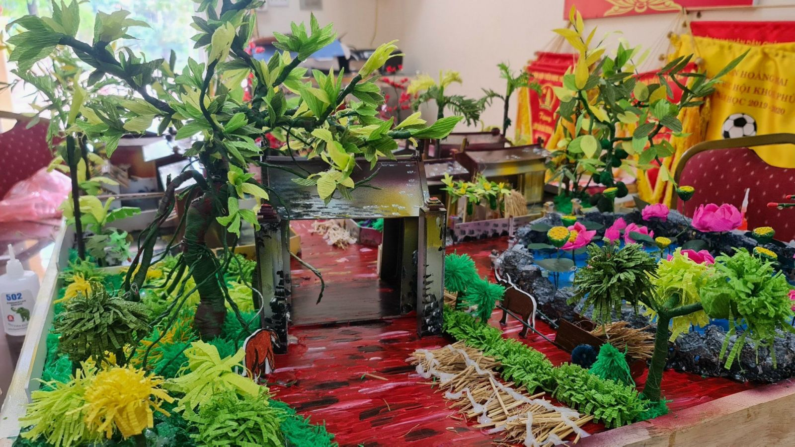

Trường Tiểu học Yên Sở đạt giải Ba cuộc thi Sáng tạo thanh thiếu niên nhi đồng Thành phố lần thứ 17 năm 2021
Sáng tạo thanh thiếu niên là cuộc thi được tổ chức thường niên hàng năm. Đây là cuộc thi rất thiết thực nhằm khơi dậy tiềm năng và phát huy tư duy sáng tạo của thanh, thiếu niên, nhi đồng đồng thời giúp các em trau dồi kiến thức, rèn luyện kỹ năng, xây dựng ước mơ trở thành nhà sáng chế trong tương lai.
Năm nay do tình hình dịch Covid-19 nhưng các em học sinh trường tiểu học Yên Sở vẫn rất tích cực tham gia nhiệt tình cuộc thi. Chỉ sau một thời gian ngắn phát động, có rất nhiều ý tưởng về các mô hình sáng tạo của các em học sinh gửi về nhà trường. Trong các sản phẩm đó, mô hình “Quần thể làng Bắc Bộ Việt Nam” do nhóm các bạn học sinh Trần Uyển Vy - học sinh lớp 5A1, Lê Hà My – học sinh lớp 3A1, Lưu Gia Hưng, Trần Thông Tuệ - học sinh lớp 1A7, là sản phẩm sáng tạo nhất được các thầy cô giáo dạy bộ môn Mỹ thuật chọn làm sản phẩm để gửi dự thi và vinh dự đạt giải Ba cấp Thành phố. Đây là mô hình mang đậm nét văn hóa của người Việt Nam.Mô hình “Quần thể làng Bắc Bộ Việt Nam”
Mô hình “Quần thể làng Bắc Bộ Việt Nam” sẽ đưa chúng ta đến với những hình ảnh thân quen như: giàn bầu, giàn đậu que, giếng nước, … phục vụ cho nhu cầu sinh hoạt của người dân. Đâu đó còn có sân phơi thóc, phơi rơm trong ngày mùa của bà con nông dân. Đó đều là những hình ảnh giản dị mà quá đỗi thân thương ở mỗi làng quê Bắc Bộ.
Để tạo nên mô hình này nhóm các em học sinh của nhà trường đã tận dụng các vật liệu dễ kiếm như: giấy, len, bìa foocmec… và quan trọng hơn tất cả là các vật liệu này đều do các em học sinh tận dụng lại từ cuộc sống hàng ngày. Giấy màu, len được các em tận dụng từ những mẩu giấy vụn, len vụn trong các giờ học Thủ công, Mĩ thuật. Còn foomec các em gom từ những cửa hàng quảng cáo mà họ bỏ đi. Hoa gạo thì tận dụng từ những chiếc túi nilon màu đỏ.
Mô hình “Quần thể làng Bắc Bộ Việt Nam” mang tính ứng dụng cao trong các giờ học Địa lý lớp 4,5 hay các tiết Tự nhiên xã hội lớp 1,2,3, Tiếng Việt lớp 3 và môn Tự nhiên và xã hội lớp 3.
Qua mô hình này, các bạn học sinh không những sẽ được ngắm nhìn lại toàn cảnh một nền văn hóa Việt xa xưa qua hình thức độc đáo mà qua đó còn giúp các bạn nâng cao ý thức, trách nhiệm giữ gìn bản sắc riêng của dân tộc ta. Đồng thời, các bạn cũng sẽ có hứng thú với những vật liệu tưởng chừng như phải bỏ đi nhưng nếu ta sáng tạo một chút sẽ có nhiều sản phẩm đẹp và vô cùng ý nghĩa.